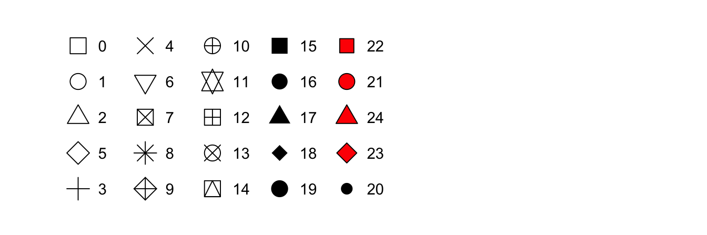

Chapter 7 데이터 시각화
7.1 데이터 시각화 이해
7.2 R base graphics
- R에 기본적으로 내장되어 있는 데이터 시각화 도구
- 다양한 종류의 그래프 생성이 가능하며, 매개변수를 통해 세부적인 그래픽 요소를 설정할 수 있음
7.3 ggplot2 패키지
7.3.1 ggplot2 패키지 소개
- 범용성, 명료함, 일관성 있는 인터페이스, 미적인 그래픽 결과를 제공하는 패키지
- Leland Wilkinson(2005)에 의해 개발된 그래픽 문법(grammar of graphics)을 구현함
- 현재 R을 통한 데이터 시각화의 표준이 되어가고 있음
- 독립적인 시각적 구성요소를 정의하고, 이를 층층이 쌓아올리는 방식으로 그래프를 생성
- 원시 데이터를 나타내는 층(layer)를 먼저 정의한 후, 각종 주석이나 통계 객체 등을 추가할 수 있음
- 시각화 과정을 표준화함으로써 그래픽 문법에 익숙해지면 다양한 그래프를 자유자재로 그릴 수 있음
- 그래픽 문법의 7가지 요소
| 요소 | 설명 |
|---|---|
| data | 데이터 |
| aesthetics | 시각적 표현 양식(x축, y축, 크기, 색상, 모양 등) |
| geometries | 시각화 그래픽 요소(기하 객체)(점, 선, 막대 등) |
| facets | 화면 분할 |
| statistics | 통계량 |
| coordinates | 좌표계 |
| theme | 그래프 꾸미기 |

7.3.2 ggplot2 기본 구조
- 가장 기본적인 구조는
ggplot()함수와geom_로 시작하는 geom 함수임 - 각 구조는
+로 연결되며, 코드가 길어져 다음 줄로 넘어가야 한다면 반드시+는 오른쪽 끝에 있어야 함ggplot()함수- 좌표 시스템(빈 그래프)을 생성하며, 그 후 레이어를 추가할 수 있음
- 그래프는 하나 이상의 레이어를 추가해서 완성됨
- 첫번째 매개변수는 데이터셋으로, 데이터프레임(data frame)이여야 함
- geom 함수
- ggplot object에 다양한 유형의 레이어를 추가함
- 범주형 데이터 시각화 -
geom_bar() - 연속형 데이터 시각화 -
geom_histogram(),geom_boxplot(),geom_point(),geom_line()
ggplot(data = <DATA>) + <GEOM_FUNCTION>(mapping = aes(<MAPPINGS>))7.3.3 막대 그래프(bar chart)
- 범주형 데이터를 시각화한 것으로, 그룹별 빈도를 막대로 나타낸 그래프
- [예제] diamonds 데이터셋
- cut : quality of the cut (Fair, Good, Very Good, Premium, Ideal)
- color : diamond color, from D (best) to J (worst)
- clarity : a measurement of how clear the diamond is (I1 (worst), SI2, SI1, VS2, VS1, VVS2, VVS1, IF (best))
## Example 1
library(ggplot2)
ggplot(diamonds, aes(x = cut)) + geom_bar()
ggplot(diamonds, aes(x = cut)) + geom_bar(fill ="orange")
ggplot(diamonds, aes(x = cut, fill = cut)) + geom_bar()
# cut 및 clarity에 따른 막대 그래프
ggplot(diamonds, aes(x = cut, fill = clarity)) + geom_bar() # 누적 막대 그래프
ggplot(diamonds, aes(x = cut, fill = clarity)) + geom_bar(position="fill") # 100% 누적 막대 그래프
ggplot(diamonds, aes(x = cut, fill = clarity)) + geom_bar(position="dodge")
ggplot(diamonds, aes(x = cut, fill = clarity)) + geom_bar(position="identity", alpha = 0.2)## Example 2
library(forcats)
gss_cat %>%
mutate(race = fct_infreq(race)) %>% # 각 수준의 빈도에 대해 내림차순 재정렬
ggplot(aes(race, fill = race)) +
geom_bar() +
scale_x_discrete(drop = FALSE) + # 값이 없는 팩터의 수준(labels)을 표시
scale_fill_manual(values = c("#d1495b", "#edae49", "#66a182", "#2389da")) +
theme(axis.title = element_text(size = 10),
axis.text = element_text(size = 10)) +
labs(x = "", y = "frequency")## Example 3
library(lubridate)
make_datetime_100 <- function(year, month, day, time) {
make_datetime(year, month, day, time %/% 100, time %% 100)
}
library(nycflights13)
flights_dt <- flights %>%
filter(!is.na(dep_time), !is.na(arr_time)) %>%
mutate(dep_time = make_datetime_100(year, month, day, dep_time),
arr_time = make_datetime_100(year, month, day, arr_time),
sched_dep_time = make_datetime_100(year, month, day, sched_dep_time),
sched_arr_time = make_datetime_100(year, month, day, sched_arr_time)) %>%
select(origin, dest, ends_with("delay"), ends_with("time"))
## 출발 요일에 대한 분포
library(RColorBrewer)
flights_dt %>%
mutate(wday = wday(dep_time, label = TRUE)) %>%
ggplot(aes(x = wday, fill = wday)) +
geom_bar() +
scale_fill_manual(values = brewer.pal(7, "Spectral"))7.3.4 히스토그램(histogram)
- 연속형 데이터를 일정 구간으로 나눈 후, 각 구간별 빈도를 막대로 나타낸 그래프
- [예제] birthwt 데이터셋
- smoke : smoking status during pregnancy (1=Yes, 0=No)
- bwt : birth weight in grams
library(MASS)
ggplot(birthwt, aes(x = bwt)) +
geom_histogram(fill = "darkgreen") +
labs(title="Histogram of birthweigth", x = "Birthweight(in gram)", y ="") +
theme_classic()
labels <- c("1" = "Smoker", "0" = "Nonsmoker")
ggplot(birthwt, aes(x = bwt, fill = smoke)) +
geom_histogram(binwidth = 200) +
labs(title="Histogram of birthweigth", x = "Birthweight(in gram)", y ="") +
facet_grid(smoke ~ ., labeller = labeller(smoke = labels)) + # 화면 분할
theme(plot.title = element_text(hjust = 0.5), # 제목 가운데 정렬
legend.position = "none") # 범례 제거7.3.5 상자 그림(box plot)
- 다섯숫자 요약값(five number summary)에 근거하여 나타낸 그래프
- 사분위수(quantile) - 데이터를 크기 순으로 정렬했을 때, 이를 사등분하는 값
- 최소값
- 1사분위수(Q1) : 관측값의 25% 순서에 있는 값
- 중앙값(median) : 관측값의 50% 순서에 있는 값
- 3사분위수(Q3) : 관측값의 75% 순서에 있는 값
- 최대값
- 사분위수범위(IQR) = Q3 - Q1
- 사분위수(quantile) - 데이터를 크기 순으로 정렬했을 때, 이를 사등분하는 값
- 정상범위 (Q1 - 1.5*IQR, Q3 + 1.5*IQR)를 벗어난 경우를 이상치(outlier)로 판단
- 그룹별 연속형 데이터의 분포를 비교하는데 용이

- [예제] birthwt 데이터셋
- race : mother’s race (1 = white, 2 = black, 3 = other)
- smoke : smoking status during pregnancy (1=Yes, 0=No)
- ui : presence of uterine irritability (1=Yes, 0=No)
- bwt : birth weight in grams
ggplot(birthwt, aes(x = factor(race), y = bwt)) +
geom_boxplot() +
coord_flip()
bp <- birthwt %>%
mutate(smoke = fct_recode(as_factor(smoke), "Smoker" = "1", "Nonsmoker" = "0"),
ui = fct_recode(as_factor(ui), "Presence" = "1", "None" = "0")) %>%
ggplot(aes(x = factor(race), y = bwt)) +
geom_boxplot() +
facet_grid(ui ~ smoke)
bp + geom_point(color = "red", alpha = 0.5)
bp + geom_jitter(color = "red", alpha = 0.5) # 관측값을 상자 그림 위에 겹쳐서 나타냄7.3.6 산점도(scatter plot)
- 두 연속형 변수의 관측 순서쌍을 이차원 평면 상에 점(point)으로 나타낸 그래프
- 한 변수의 변화에 따른 다른 변수의 변화(trend)를 파악하는데 용이
pch- 점(point) 유형- 0~14 : 채우기 없음, 테두리 색상만
color로 설정 - 15~20 : 채우기 색상만
color로 설정, 테두리 없음 - 21~24 : 채우기 색상은
fill, 테두리 색상은color로 설정
- 0~14 : 채우기 없음, 테두리 색상만

- [예제] birthwt 데이터셋
- age : mother’s age in years
- lwt : mother’s weight in pounds at last menstrual period
- smoke : smoking status during pregnancy (1=Yes, 0=No)
- bwt : birth weight in grams
ggplot(birthwt, aes(x = age, y = bwt)) +
geom_point(size = 3, color = "red", alpha = 0.5, pch = 17) +
geom_rug(position = "jitter", size = 0.2) + # rug plot 추가
geom_smooth(method = lm) + # 선형 추세선 추가
theme_classic()
ggplot(birthwt, aes(x = age, y = bwt)) +
geom_point(aes(color = lwt), size = 4, alpha = 0.7, pch = 19) +
scale_color_gradient(low = "#FFF59D", high = "#388E3C") +
labs(color = "mother's weight") +
theme_classic()
ggplot(birthwt, aes(x = age, y = bwt,
color = factor(smoke), size = lwt)) +
geom_point(alpha = 0.5) +
labs(color = "Smoking", size = "Mother's weight") +
scale_color_discrete(labels = c("No", "Yes"))7.3.7 선 그래프(line plot)
- 한 변수의 변화에 따른 다른 변수의 변화를 선(line)으로 연결하여 나타낸 그래프
- 일반적으로 x축에는 시간 변수가 종종 사용됨
- 연속형 변수는 보통 몇 개의 이산적인 값을 취하는 경우를 다룸
- 범주형 변수는 순서가 있는 경우에만 가능
## Example 1
# 시간에 따른 이름에 "x"가 포함되는 아기의 비율 변화
library(babynames)
babynames %>%
group_by(year) %>%
summarise(prop_x = mean(str_detect(name, "x"))) %>%
ggplot(aes(year, prop_x)) +
geom_line()- [예제] gapminder 데이터셋
- continent : factor with 5 levels
- year : ranges from 1952 to 2007 in increments of 5 years
- lifeExp : life expectancy at birth, in years